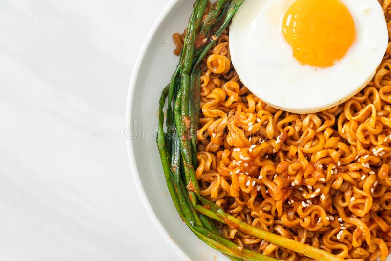

Pimped up Samyang ramen

You'll love these super spicy noodles, but think there must be a way to make them even better? Try pimping them with some extra ingredients and make them into a proper meal. Don't worry, it takes not much longer than just cooking them up plain and simple.
What you'll need:
- Samyang hot chicken ramen (Choose your favourite flavour)
- Green beans (frozen)
- peanut butter
- egg
- spring onion (chopped)
Method:
- Boil some water to cook the noodles, add in noodles and grean beans and cook according to instructions for 5 minutes.
- Drain and reserve some of the water as instructed on packet.
- Add the sauce, water and some peanut butter to your pan. Fry for 30sec, then add the noodles.
- Serve noodles with the topping, a fried egg and some spring onion.